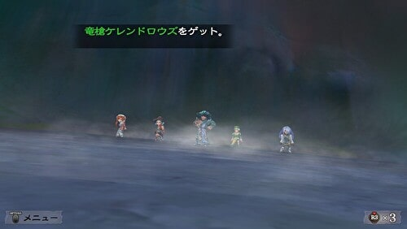

海賊シルバー
ホーム > ミンサガ index > マルディアスの歴史 > 海賊シルバー
→カール１世からの続き。
海賊シルバー
#ロマサガ #ミンサガRS #ミンサガリマスター
— 河津秋敏 (@SaGa30kawazu) January 5, 2023
クジャラートは多くの兵士を失い、ローザリアは一人の王を失いました。両国の拡張の季節は終わり、内政の充実と政争の時期が訪れます。我々は再び帝国へと目を向けましょう。
ここに一匹の竜がいました。竜はエロールに人間にして欲しいと頼みます。
#ロマサガ #ミンサガRS #ミンサガリマスター
— 河津秋敏 (@SaGa30kawazu) January 6, 2023
「海賊になって暴れ回りたい！」
竜の願いをエロールは聞き届けます。
「その代わり、十分楽しんだ後で私の願いも聞いてくれ」
海賊になった竜はシルバーと名乗りサンゴ海の船乗り達を震え上がらせます。しかしシルバーは満足出来ません。
#ロマサガ #ミンサガRS #ミンサガリマスター
— 河津秋敏 (@SaGa30kawazu) January 7, 2023
ある日シルバーは吟遊詩人が歌う帝国の至宝の詩を耳にします。風のオパールを手に入れれば、すべての海賊を超えた伝説になれる。シルバーは帝国からオパールを奪いました。
そこにエロールが現れます。次は自分の願いを叶える番だとシルバーに告げます。
#ロマサガ #ミンサガRS #ミンサガリマスター
— 河津秋敏 (@SaGa30kawazu) January 8, 2023
シルバーはシルバードラゴンに戻り、海賊シルバーの宝を自ら守る事になります。ディステニィストーンを手にすべき新たな英雄達が現れるまで。
シルバーがその任から解放される日は訪れるのでしょうか？ その時シルバーは何を語るのでしょうか。
海賊シルバーに関する詩人の語り
シルバードラゴンはワロン島のジャングルの奥地にいます。シルバードラゴンと戦い、勝利すると海賊シルバーはその任から解放されます。その任から解放された海賊シルバーがこちら。
因みにこのシルバードラゴンはレアアイテム「竜槍ケレンドロウズ」を稀にドロップするので、レアアイテム好きな方は是非狙ってみてください。

詩人（＝エロール）は語りの後、「シルバーは突然姿を消してしまった」と言っていますが、シルバーをもとの竜の姿に戻したのはエロール本人。シルバーはオパールを守らせるために都合のいいように利用されていたと言えます。
→年表に戻る。